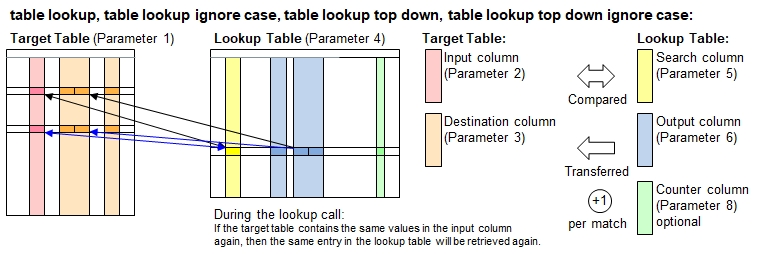

Function Names
table lookup, table lookup ignore case, table lookup top down, table lookup top down ignore caseDescription
This function uses data in specified input columns (2nd function paramameter) in the target table (1st param)
to search for matching data in the seach columns (5th paam) in the lookup table (4th param). Once a match has been encountered, then the
corresponding output columns (6th param) in the lookup table will be transferred to the target columns (3rd param) in
the target table. The function variant table lookup ignore case is self-explanatory. In case the lookup table contains multiple
matching entries, the first match will always apply..

The lookup function contains powerful comparison algorithms which will index the lookup table and accelerate the lookup performance significantly
if it exceeds a size where the time overhead of creating an internal indexation does pay. This scheme accelerates the lookup procedure
to a search time ratio versus table size (n)being O ( log(n)) ).
Looking up a table containing ca 16,000 entries requires 14 comparisons only. For small tables, indexing will be skipped in order to avoid the
initial overhead to do an indexation and the lookup takes place in a top-down approach starting from row 1.
If a large lookup table is considered, but you know that most items looked up lie in to rows (say: roughly first 30 rows), then you may
experience a performance improvement using the function name table lookup top down ... instead. The output is the same in both cases.
This functions described here provide the option to select rows (7th function parameter) and counting the lookup matches in the lookup table
(8th function parameter).
Call as: procedure or function
Restrictions
Indirect parameter passing is disabled
Parameter count
6 - 8
Parameters
| No. | Type | Description |
|---|---|---|
| 1. input |
literal | Name of target table The table referred here is assumed to be the more recent table. |
| 2. input |
table columns | Input columns Specify 1 or more columns in the input table which contains the information to compare with the search columns in the lookup table.
|
| 3. input |
table columns | Destination columns Specify columns in the input table where to copy the information retrieved from output columns in the lookup table.
The column header names do not need to be the same the corresponding headers in the lookup table.
Example: { Phone Number, Fax Number } when looking up a phone directory table.
|
| 4. input |
literal | Name of lookup table The table referred here is assumed to be the more recent table. |
| 5. input |
table columns | Search columns Specify 1 or more columns in the lookup table which contains the information to compare with the corresponding inputs columns in the target table.
|
| 6. input |
table columns | Output columns Specify columns in the lookup table for the information to be retrieved and copied to the destination columns in the target table.
The column header names do not need to be the same the corresponding headers in the lookup table.
Example: { Phone Number, Fax Number } when looking up a phone directory table.
|
| Opt. 7. code |
expression :literal |
Expression to select rows This function parameter allows you to select the rows in the target table in order to limit the lookups to those rows only.
|
| Opt. 8. input |
table column | Counter column Specify 1 column in the lookup table which shall be used to count the successful lookup made. This function is useful in order to
get an idea of the data in the lookup table searched frequently, rarely or not at all. If the column already contains numbers, then
the existing numbers will be incremented, i.e. no reset to zero.
Hint: If you need this function parameter, but not the 7th function parameter, then write true into the 7th parameter. Default value: {} (no column selected) |
Return value
| Type | Description |
|---|---|
| numeral | Number of lookups made Every successful lookup (input columns match with search columns are matching) will count 1. |
Examples
table load( lookup, "Examples/Table Lookup Example 1.csv" );
table initialize( target, { Town, Florence, Venice, Florence, Edinburgh, New York, Hamburg, Florence, Munich, New York } );
count[] = table lookup( target, Town, { Food or Beverage, Recommended, Row Number },
lookup, City, { Meal or Drink, Recommendation, '#row' }, true, Counter );
echo("Lookup table:");
table list( lookup );
echo("Target table after lookup (", count[], " items found):");
table list( target );
Output
Lookup table:
0 : City | Meal or Drink | Recommendation | Counter
1 : Hamburg | Meal | Hering | 1
2 : Hamburg | Meal | Seafood |
3 : New York | Meal | Pizza | 2
4 : New York | Meal | Hamburger |
5 : Florence | Drink | Chianti | 3
6 : Florence | Meal | Tagliatelli |
7 : Edinburgh | Drink | Single Malt | 1
8 : Edinburgh | Meal | Fish & Chips |
9 : New York | Drink | Lager |
10 : Plzen | Drink | Pils |
11 : Munich | Meal | Pork | 1
12 : Munich | Drink | Weissbier |
Target table after lookup (8 items found):
0 : Town | Food or Beverage | Recommended | Row Number
1 : Florence | Drink | Chianti | 5
2 : Venice | | |
3 : Florence | Drink | Chianti | 5
4 : Edinburgh | Drink | Single Malt | 7
5 : New York | Meal | Pizza | 3
6 : Hamburg | Meal | Hering | 1
7 : Florence | Drink | Chianti | 5
8 : Munich | Meal | Pork | 11
9 : New York | Meal | Pizza | 3
See also
table lookup once
table lookup fast
table lookup smart
table lookup smart once
table integrate
table expand